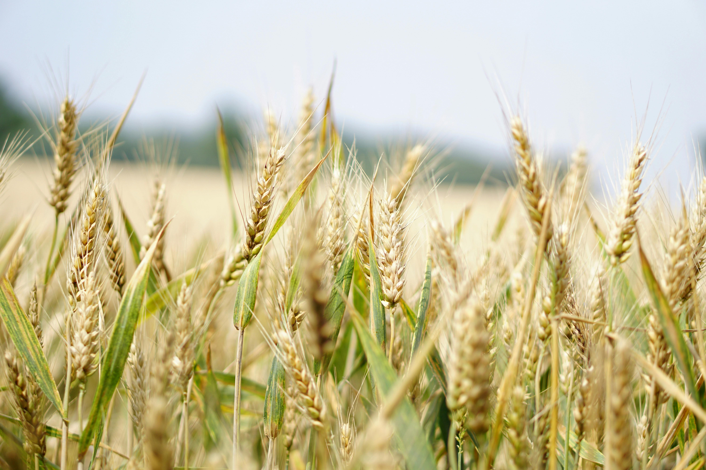
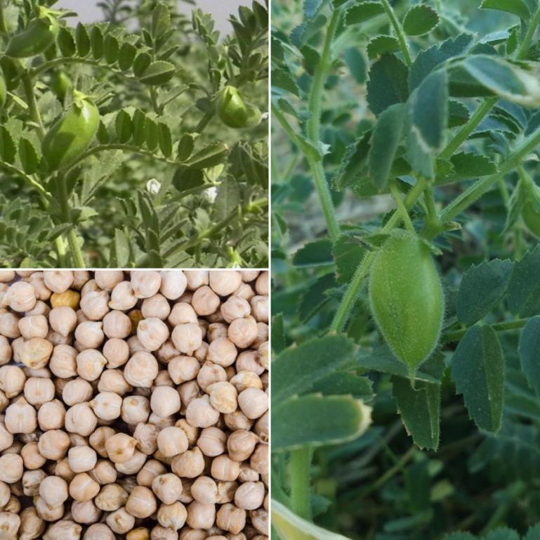
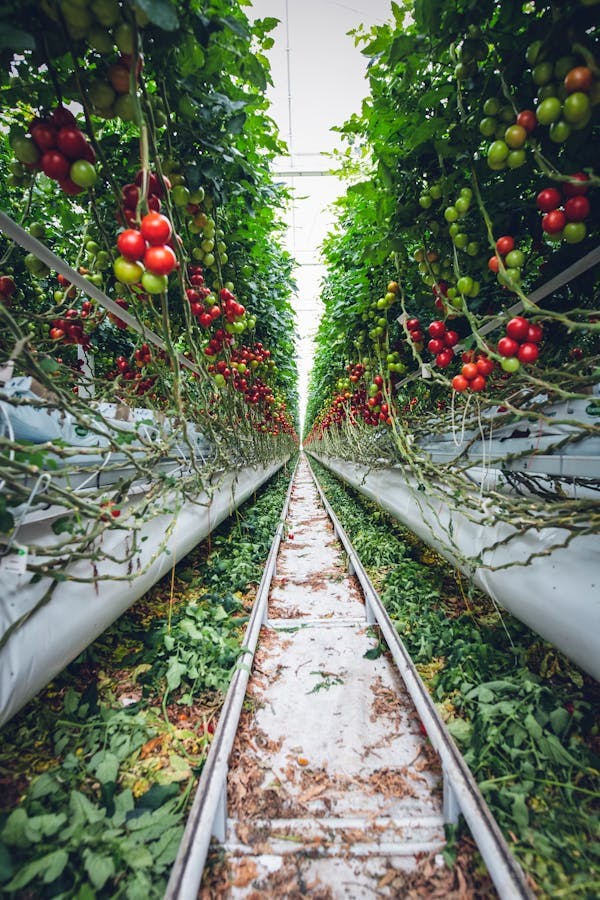

Swarna (MTU 7029) is a versatile, high-yielding rice variety well-suited to the rainfed shallow lowlands of Bihar and other similar regions.
Rice Swarna (MTU 7029)

PBW 343 is a popular wheat variety known for its high yield and disease resistance, particularly against rust. It thrives in well-drained loamy soil with a pH of 6.0 to 7.5.
WHEAT PBW-343Papaya (Carica Papaya) Pusa Delicious matures in 8 to 12 months from planting. It thrives in well-drained, fertile loamy soil with a pH of 6.0 to 7.0.
Papaya-PUSACotton - Suvin (BT), is a high-yielding, known for its pest resistance and superior fiber quality. It thrives in well-drained, loamy to sandy loam soils with a pH of 6.0 to 7.5.
Cotton-Suvin
Potato Kurfi Jyoti matures in 90 to 120 days from planting. It thrives in well-drained, loamy soil with a pH of 5.5 to 6.5. Each acre can yield approximately 20 to 30 tons of potatoes annually.
Potato-KurfiPusa 23 is a high-yielding variety of pearl millet developed for dryland farming. It thrives in sandy loam to loamy soils with good drainage, requiring minimal water
Millets(Pusa 23)
Banana (Musa species) Bhusan (Robusta) plants typically yield fruit 9 to 12 months after planting. They thrive in well-drained, fertile loamy soil with a pH of 5.5 to 7.0.
Banana (Musa Species)

Bengal Gram Pusa 362 is a high-yielding chickpea variety that thrives in well-drained loamy to clay loam soils with a pH of 6.0 to 7.5. It’s a robust.
Bengal GramThe Guava L-49 variety begins yielding fruit in 2 to 3 years, with optimal production reached by the fourth or fifth year. It thrives in well-drained loamy soil with a pH range of 5 to 7.5.
Guvava L-49Black Matpe - T9 is a high-yielding variety of black gram (Vigna mungo), notable for its resilience and adaptability. It thrives in well-drained, sandy loam or loamy soils with a pH range of 6.0 to 7.0.
Black MatpeApple - McIntosh Red is a popular variety known for its sweet, tart flavor and crisp texture. It thrives in well-drained, loamy soils with a pH of 6.0 to 6.8.
Apple - McIntosh
Onion N-53 matures in about 4 to 5 months from planting. It thrives in well-drained, loamy soil with a pH of 6.0 to 7.0. Each acre can produce approximately 20 to 30 tons of onions.
Onion N-53
The Mango Langra variety starts yielding fruit in 3 to 4 years from grafted saplings, or 5 to 7 years from seed-grown plants. It thrives in well-drained, loamy soil with a pH of 5.5 to 7.5.
Mango (Mangifera Indica)
Sugarcane - Co 0238 is a high-yielding variety known for its excellent sugar content and adaptability. It thrives in well-drained, loamy to clay loam soils with a pH of 6.0 to 7.5.
Sugarcane-Co 0238Mustard - Pusa Jaikisan is a high-yielding variety valued for its oil content and disease resistance. It thrives in well-drained, loamy to sandy loam soils with a pH of 6.0 to 7.5.
Mustard-Pusa JaikisanL-9 is a high-yielding variety known for its adaptability and nutrient-rich seeds. It thrives in well-drained, loamy to sandy loam soils with a pH of 6.0 to 7.5.
Lentils (Masoor)-L-9Groundnut - TARA is a high-yielding variety known for its disease resistance and good quality nuts. It thrives in well-drained, sandy loam to loamy soils with a pH of 5.5 to 7.0.
Groundnut-TARAK-850 is a high-yielding variety of Kabuli chana (chickpea) known for its resilience and productivity. It grows well in well-drained loamy soil with a pH of 6.0-7.5.
Chick Peas (Kabuli Chana)

Tomato - PUSA Hybrid 2 is a high-yielding variety known for its firm, red fruits and resistance to diseases. It thrives in well-drained, loamy soils with a pH of 6.0 to 7.0.
Tomato-PUSA HybridSesamum T-6 is a high-yielding variety known for its oil-rich seeds and drought tolerance. It grows best in well in sandy loam to loamy soils with a pH of 6.0 to 7.5.
Sesamum (Til)-T-6White Peas (Matar) - PUSA 105 is a high-yielding variety known for its quality and adaptability. It thrives in well-drained, loamy to sandy loam soils with a pH of 6.0 to 7.5.
White Peas (Matar)Jute - JRO 524 is a high-yielding variety known for its strong fiber quality and adaptability. It thrives in well-drained, loamy to clayey soils with a pH of 5.5 to 7.0.
Jute - JRO 524Pusa 84 is a high-yielding variety of moong (green gram) developed for its resilience and productivity. It thrives in well-drained loamy soil with a pH of 6.0-7.0.
Green Grams (Moong)
Red Kidney Beans (Rajma) - PBR 357 is a high-yielding variety known for its excellent quality and adaptability. It flourishes in well-drained, loamy to sandy loam soils with a pH of 6.0 to 7.5.
Red Kidney Beans (Rajma)